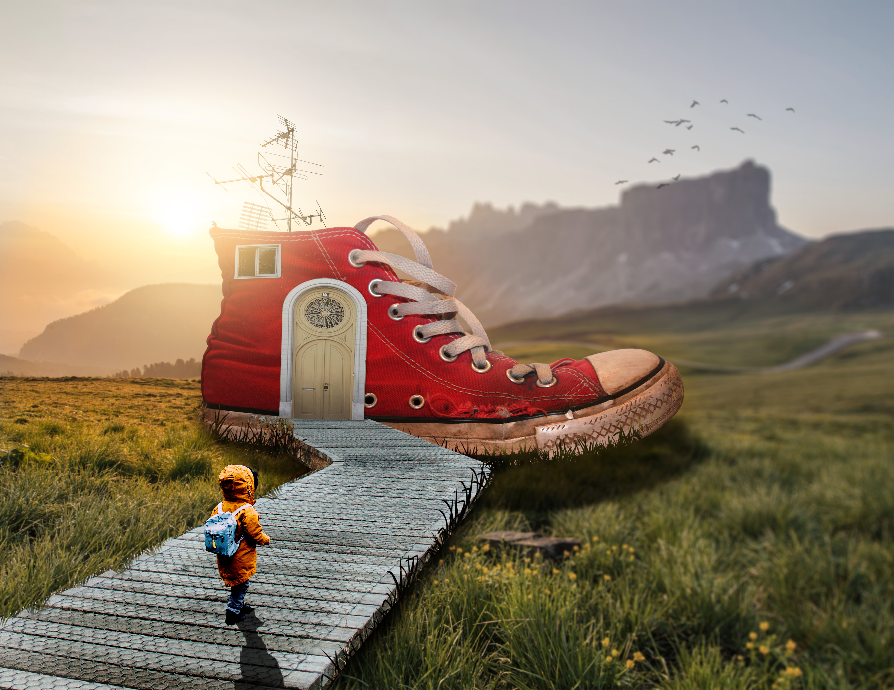
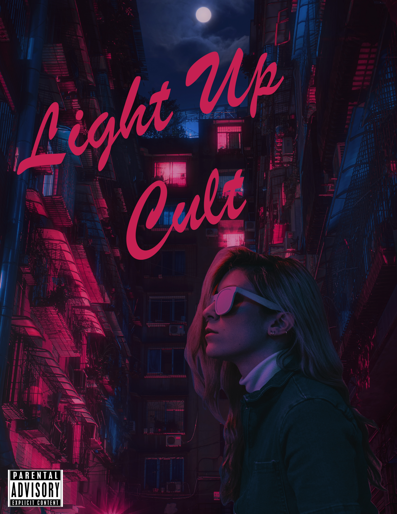

Shoe House
One of my favorite assignments to do in college, using photoshop is always fun to me and this assignemnt was memorable for me and always look back on this piece to see how much I've truely improved.

Album Cover
One of my favorite assignments I did and genuinely very proud of this one and it came toegther so well in my eyes.

Reverse board
This assignment was really an experiment and I would say I had learned alot and refined many of my skills nn this assignment.